Logo & Brand Identity · 2018 — 2026
Visual ID.
Eight years of marks, wordmarks, and brand systems — built for startups, artists, collectives, and Web3 projects. This is a wide sweep across many clients, not a deep dive into a few.
Many marks,
one craft.
Building a logo is only the start — a mark has to live everywhere. Across dozens of projects I've designed identities and carried them into real applications: social, print, merch, packaging, product, and events. This case study is about range — the sheer number of brands, styles, and contexts I've worked through.
The logo wall.
A selection of marks across many industries and visual registers — from playful and hand-drawn to strict and geometric. Each square is one identity.
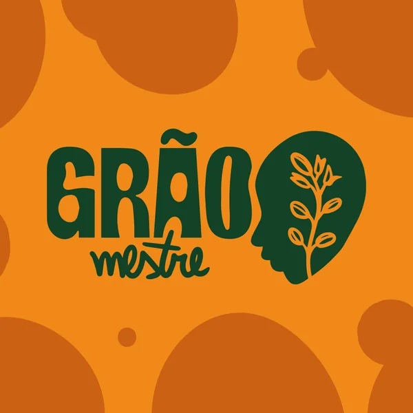
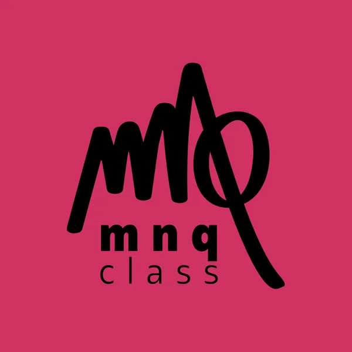
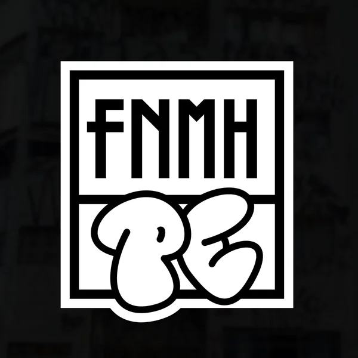
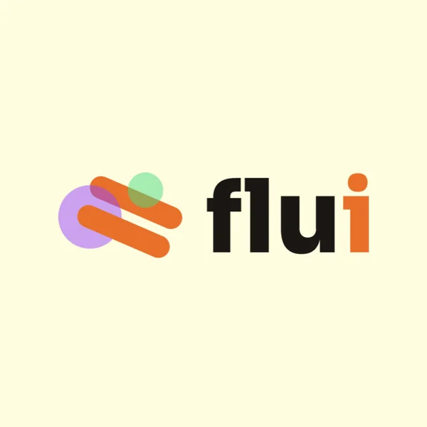
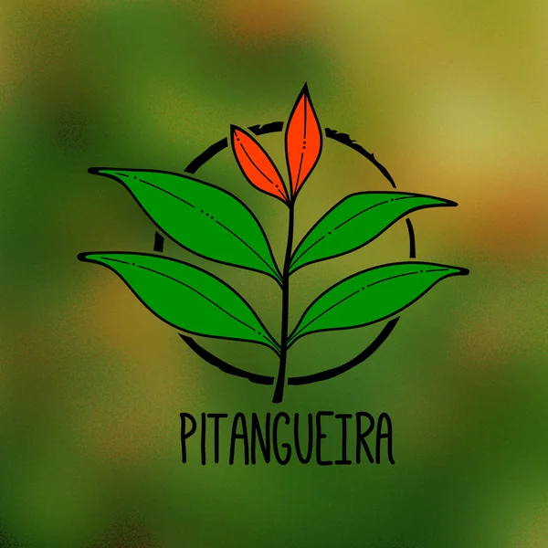
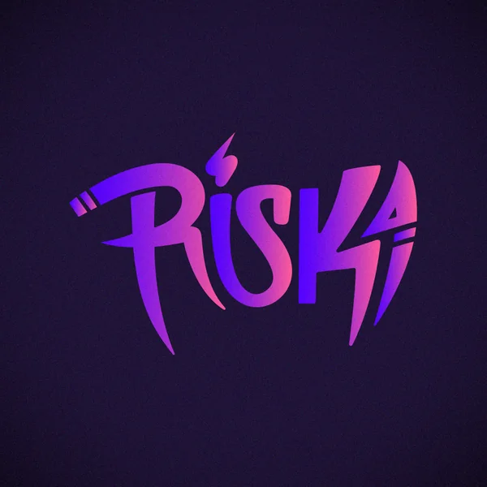
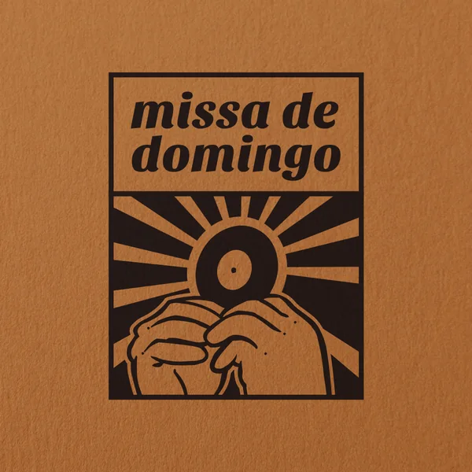
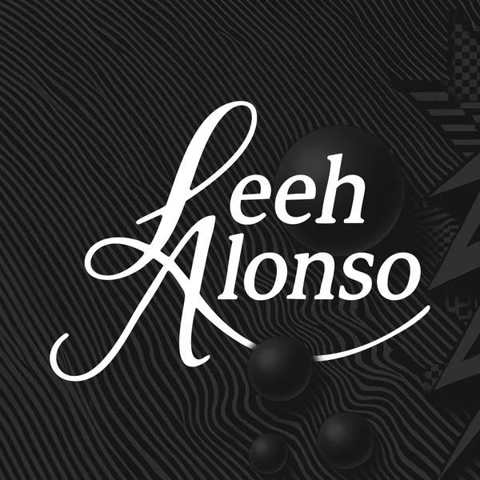
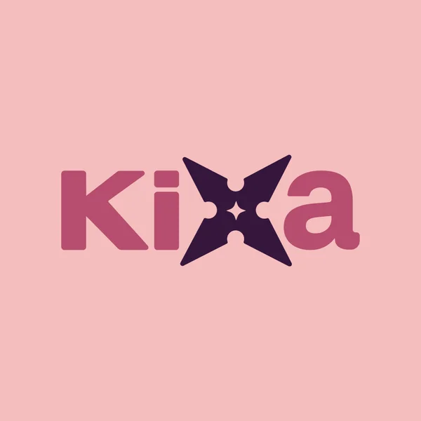
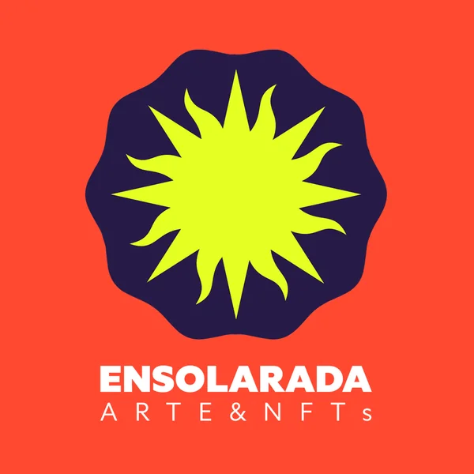
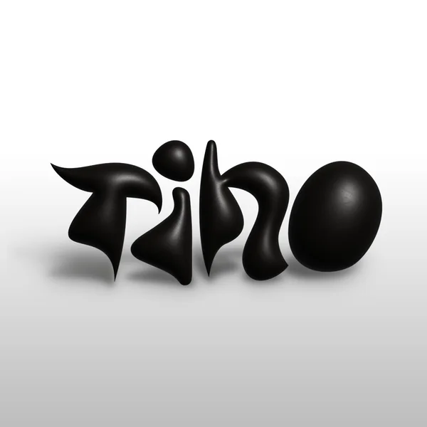
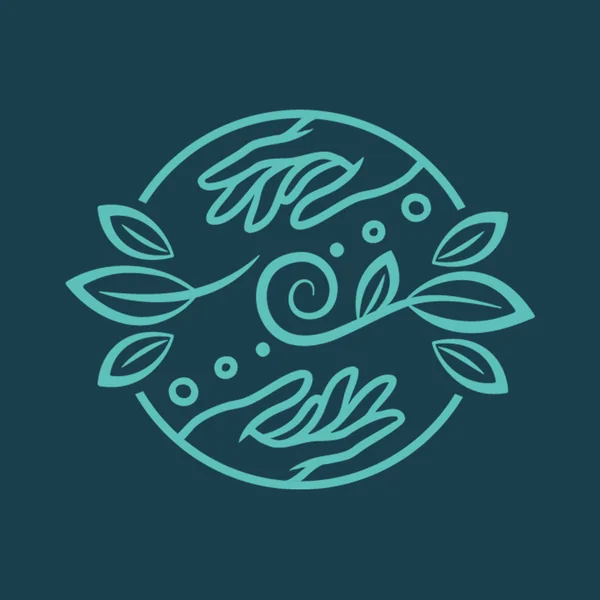
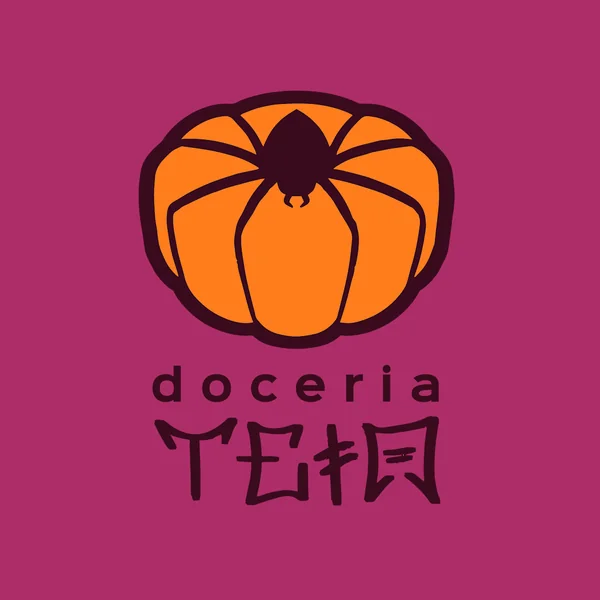
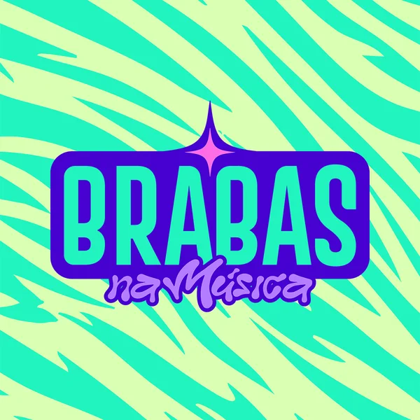
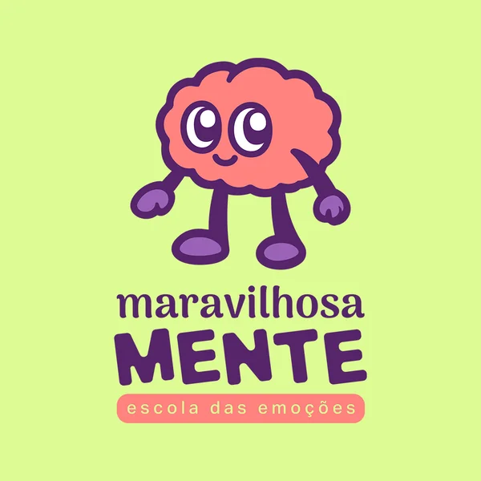
Marks in the wild.
Where the identities actually show up. Grouped by medium — each square is a real application from a different project.
Brand Systems
Color · Type · GridFull identity toolkits — logo lockups, palettes, type scales, and usage rules.
Social & Digital
Profiles · Posts · BannersAvatars, headers, post templates, and campaign key visuals adapted per brand.
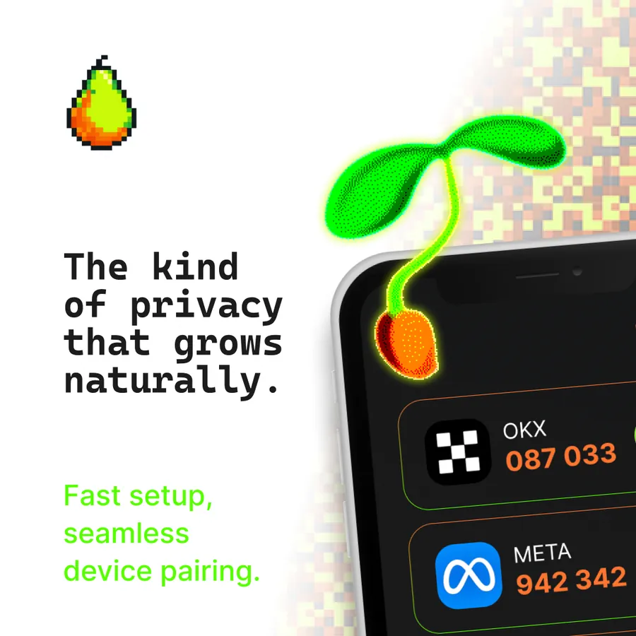
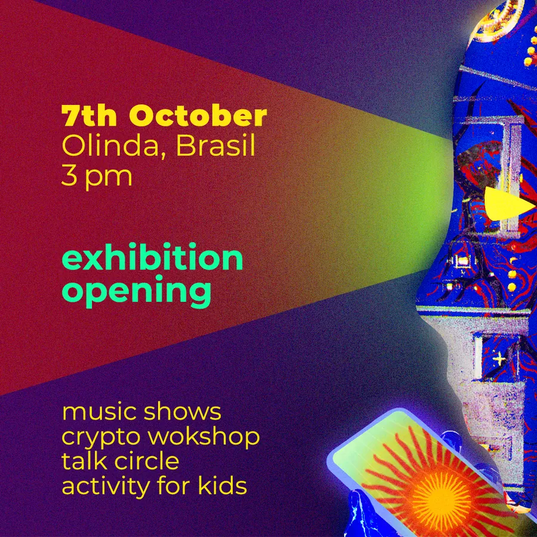
Print & Merch
Apparel · Stationery · StickersIdentity taken to physical goods — tees, cards, posters, and sticker packs.
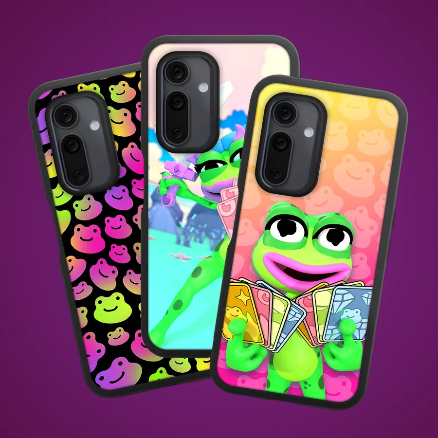
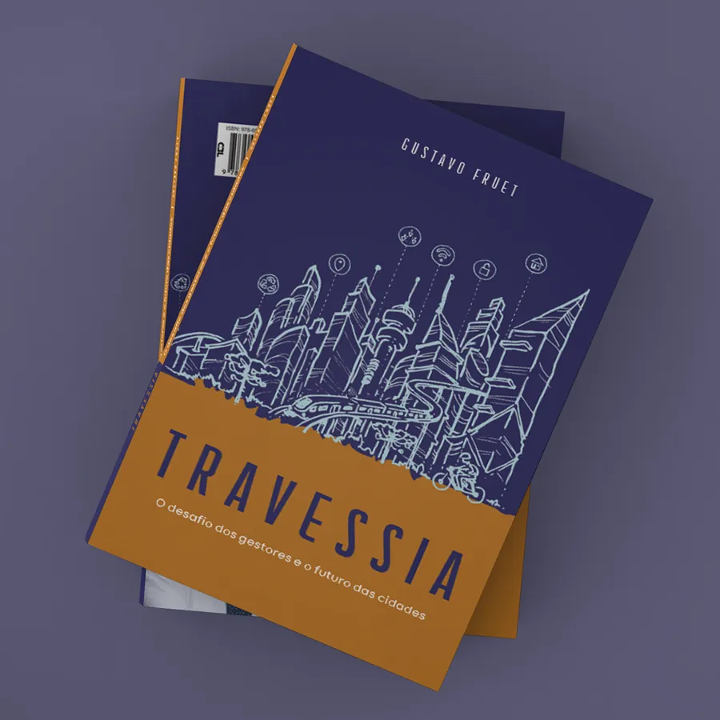
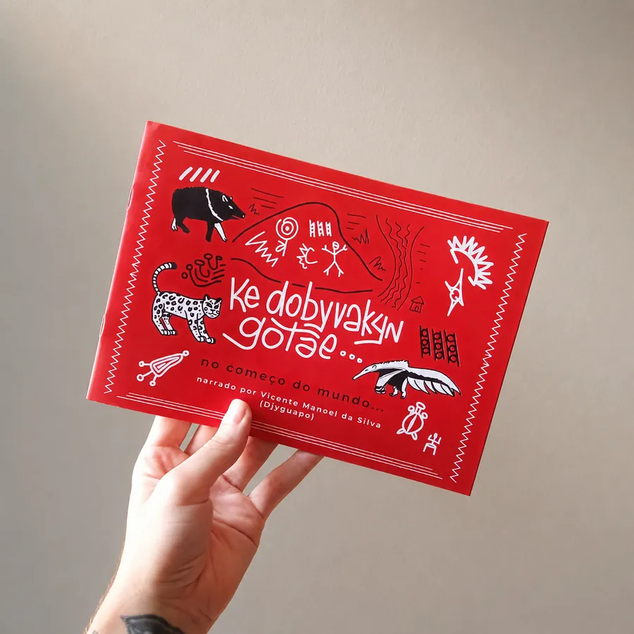
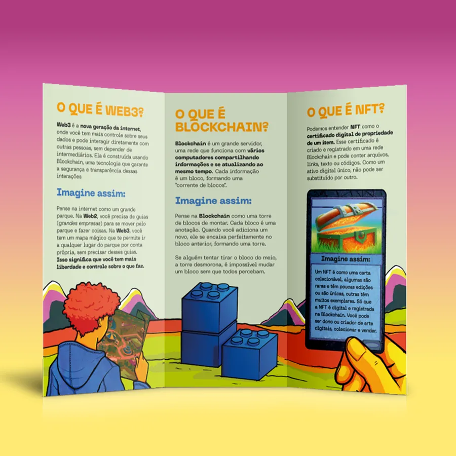
Packaging & Product
Boxes · Labels · MockupsMarks applied to boxes, labels, and product surfaces across a few brands.
Events & Environmental
Booths · Signage · ScreensIdentity at scale — event booths, stage screens, and physical signage.
A few of the brands & projects
Need a mark
that travels?
From a single logo to a full identity system with every application ready to ship.
Start a project ↗